Usage & Examples
Basic functionalities
1. Applying the style sheet: lizard_style()
The package includes a built-in style sheet, designed to standardize and enhance the visual appeal of your plots. This style sheet configures various elements, ranging from fonts and font sizes to axis and grid settings, and even the default colors for multiple lines in a plot. Applying this style, which is also possible in the R package with + lizard_style() provides a consistent look, whether you’re using ggplot in R or matplotlib/seaborn in Python.
You can apply the Biolizard-look by placing lizard_style() at the top of your scripts after importing BioLizardStylePython. Please note that lizard_style() serves as a starting template and may not be the ideal style for every plot. You can easily customize individual style settings by placing your overrides after calling the lizard_style() function. Use plt.style.use('default') to return back to the default style.
Here’s a demonstration of how a simple line plot would look before and after applying the lizard_style():
import matplotlib.pyplot as plt
import numpy as np
from BioLizardStylePython import *
np.random.seed(42)
# Function to create random lineplot
def create_line_plot():
x = np.linspace(0, 10, 10)
y1 = np.sin(x) + np.random.normal(0, 0.1, size=x.shape)
y2 = np.cos(x) + np.random.normal(0, 0.1, size=x.shape)
y3 = x + np.random.normal(0, 0.5, size=x.shape)
plt.figure()
plt.plot(x, y1, label="Line 1")
plt.plot(x, y2, label="Line 2")
plt.plot(x, y3, label="Line 3")
plt.title("Random Plot with 3 Lines")
plt.xlabel("X-axis")
plt.ylabel("Y-axis")
plt.legend()
plt.show()
create_line_plot()
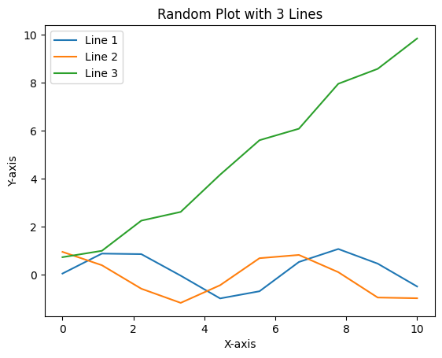
lizard_style()
create_line_plot()
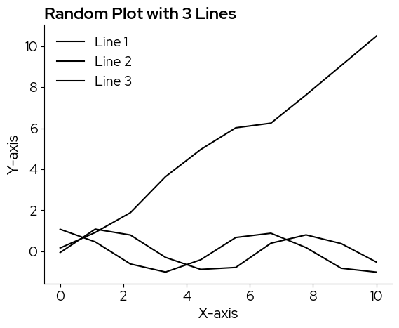
Note that the default color is black, for a ‘sharper’ and more sobre look. In case a color scale is needed, as in this example, there are multiple scales you can pick from and add manually.
2. Using the color palettes
There are two discrete colormaps and 4 continuous colormaps available in the BioLizard style packages.
Discrete:
biolizard_qualitative_pal: Colorblind-safe qualitative color palette based on the colors in the biolizard brand book.
biolizard_paired_pal: Colorblind-safe qualitative color palette based on the colors in the biolizard brand book, especially suited for levels that are related 2-by-2.
These colormaps are available as matplotlib.colors.ListedColormap objects.
Continuous:
biolizard_hues_pal: Designed for discrete data with many levels: Maps each level to an evenly spaced hue on the color wheel, starting with the dark green color from the brand book. DOES NOT generate colorblind-safe palettes.
biolizard_sequential_pal: Sequential, colorblind-safe, perceptually unifom color palette inspired by the light and dark blue shades of the brand. This is the default for continuous data.
biolizard_divergent_pal: Divergent, colorblind-safe and perceptually uniform (within each branch) continuous color palette inspired by the green-blue color gradient in the biolizard brand book.
biolizard_beige_blue_pal: Continuous, perceptually uniform, color-blind friendly color scale inspired by the beige and blue colors in the brand book.
biolizard_beige_gn_blue_pal: Continuous, perceptually uniform, color-blind friendly color scale inspired by the beige, green and blue colors in the brand book.
These colormaps are available as matplotlib.colors.LinearSegmentedColormap objects and are registered with matplotlib. This means they can be used by passsing their name to the palette (seaborn) or cmap (matplotlib) parameters, where available.
Basic colors:
Basic colors of the brand style are black, white, light blue and light beige.
The plot background is white
Black is used for all plot elements that do not require colors such as axes, titles and plot elements when there is only one group (i.e. no need to distinguish lines or points by color):
blz_base_element,blz_base_textlight beige is used as fill color when no color scale is needed, e.g. as fill color for box plots:
blz_base_filllight blue can be used as fill color to highlight specific elements in the plots:
blz_highlight_fillA darker blue can be used to highlight plot elements such as lines or points:
blz_highlight_element
The hex value of these colors can be called by using the corresponding variables:
blz_base_fill
'#faf4ed'
2.1 Discrete data
Following color scales were designed for discrete data:
biolizard_qualitative_pal: Colorblind-safe qualitative color palette based on the colors in the biolizard brand book.
biolizard_qualitative_pal

biolizard_paired_pal: Colorblind-safe qualitative color palette based on the colors in the biolizard brand book, especially suited for levels that are related 2-by-2.
biolizard_paired_pal

biolizard_hues_pal: Note that while this is technically a continuous scale, it is designed for discrete data with many levels: Maps each level to an evenly spaced hue on the color wheel, starting with the dark green color from the brand book. DOES NOT generate colorblind-safe palettes.
biolizard_hues_pal
![biolizard_hues_pal colormap]( "biolizard_hues_pal")
Adding the suffix “_r” reverses these palettes:
biolizard_qualitative_pal_r

Colors can be retrieved from the discrete colorscales by passing a range to the palettes (returns an array of rgba values), or by using the .colors attribute (returns a list of all colors in the palette).
biolizard_qualitative_pal(range(5))
array([[0.62352941, 0.82745098, 0.3372549 , 1. ],
[0.05098039, 0.27843137, 0.63137255, 1. ],
[0.89803922, 0.64313725, 0.79607843, 1. ],
[1. , 0.43529412, 0.34901961, 1. ],
[0.45882353, 0.86666667, 0.86666667, 1. ]])
biolizard_qualitative_pal.colors
['#9fd356',
'#0d47a1',
'#E5A4CB',
'#FF6F59',
'#75DDDD',
'#009944',
'#1e88e5',
'#F72585']
Since biolizard_hues_pal is encoded as a continuous color palette, passing a range will lilely NOT yield the desired effect, as the continuous color scale is represented by a sequence of 255 colors. Passing e.g. range(5) will only retrieve the first 5 of these 255 colors. Instead, use np.linspace to ensure all colors are spaced evenly across the colorscale:
ncolors = 5
rgbacolors = biolizard_hues_pal(np.linspace(0, 1, ncolors))
Then, you can use matplotlib.colors.rgb2hex to obtain hex values if needed:
[matplotlib.colors.rgb2hex(col) for col in rgbacolors]
['#009842', '#0096b8', '#b565c3', '#c36c55', '#6d8f00']
2.1.1 Seaborn
Discrete colormaps can be chosen by specifying a list of colors:
import seaborn as sns
# Sample data
data = sns.load_dataset("iris")
sns.swarmplot(
x="species",
y="sepal_length",
hue="species",
data=data,
palette=biolizard_qualitative_pal.colors,
)
plt.title("A Flower Plot")
plt.show()
/var/folders/b1/zd673br14kd_wv9lkwv86y200000gn/T/ipykernel_13978/3785299121.py:5: UserWarning: The palette list has more values (8) than needed (3), which may not be intended.
sns.swarmplot(
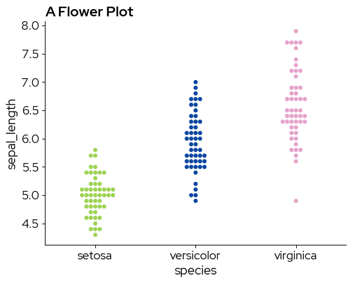
sns.swarmplot(
x="species",
y="sepal_length",
hue="species",
data=data,
palette=biolizard_paired_pal.colors, # Note that a paired palette does not make much sense in this case, but it is just for demonstration purposes
)
plt.title("A Flower Plot")
plt.show()
/var/folders/b1/zd673br14kd_wv9lkwv86y200000gn/T/ipykernel_13978/3666193060.py:1: UserWarning: The palette list has more values (6) than needed (3), which may not be intended.
sns.swarmplot(
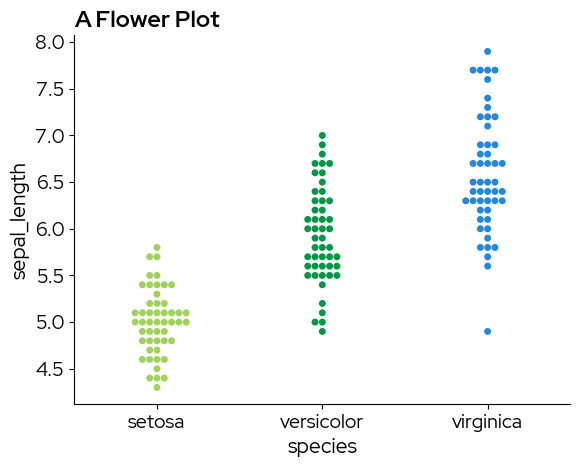
Continuous colormaps can be referenced by their name, this ensures that colors are picked across the entire range of the continous scale:
sns.swarmplot(
x="species",
y="sepal_length",
hue="species",
data=data,
palette="biolizard_beige_blue_pal",
)
plt.title("A Flower Plot")
plt.show()
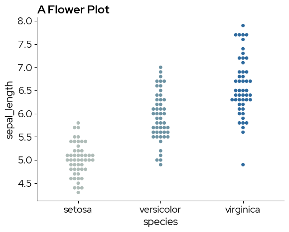
2.1.2 Matplotlib
Colors from the discrete scale can be passed to the color parameter of plt.bar for example:
# Data for the bar plot
categories = ["A" + str(i) for i in range(12)]
values = [4, 7, 1, 8] * 3
# Create the bar plot
# .colors returns a list that can be used for the color parameter
plt.figure(figsize=(8, 6))
bars = plt.bar(categories, values, color=biolizard_qualitative_pal.colors)
# Add title and labels
plt.title("Example Bar Plot")
plt.xlabel("Categories")
plt.ylabel("Values")
plt.show()
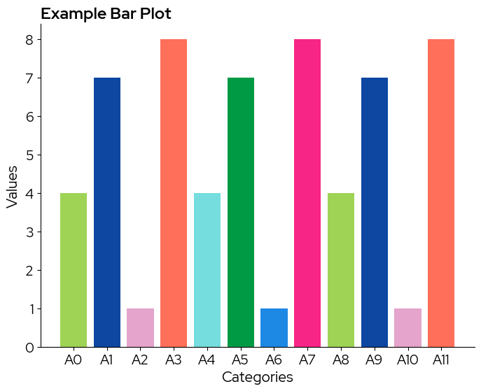
Note that in case the colorscale contains less levels than the data, colors are recycled without warning!
To use a continuous scale, we need to take colors at regular intervals across the colormap:
# take colors at regular intervals across the colormap
colors = biolizard_hues_pal(np.linspace(0, 1, len(categories)))
bars = plt.bar(categories, values, color=colors)
# Add title and labels
plt.title("Example Bar Plot")
plt.xlabel("Categories")
plt.ylabel("Values")
plt.show()
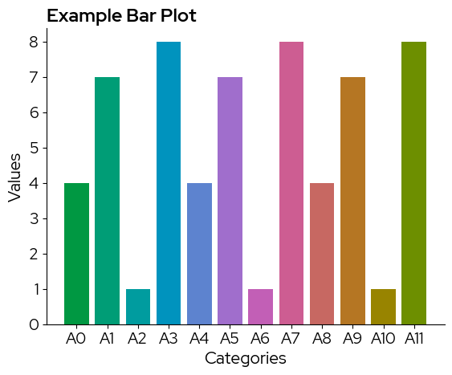
2.2 Continuous data
Following color scales were designed for continous data:
biolizard_beige_blue_pal: Continuous, perceptually uniform, color-blind friendly color scale inspired by the beige and blue colors in the brand book.
biolizard_beige_blue_pal
![biolizard_beige_blue_pal_r_r colormap]( "biolizard_beige_blue_pal_r_r")
biolizard_beige_gn_blue_pal: Continuous, perceptually uniform, color-blind friendly color scale inspired by the beige, green and blue colors in the brand book.
biolizard_beige_gn_blue_pal
![biolizard_beige_gn_blue_pal_r_r colormap]( "biolizard_beige_gn_blue_pal_r_r")
biolizard_sequential_pal: Sequential, colorblind-safe and perceptually uniform color palette inspired by the light and darker shades of blue in the BioLizard brand book.
biolizard_sequential_pal
![biolizard_sequential_pal colormap]( "biolizard_sequential_pal")
biolizard_divergent_pal: Divergent, colorblind-safe and perceptually uniform (within each branch) color palette inspired by the green-blue color gradient in the biolizard brand book.
biolizard_divergent_pal
![biolizard_divergent_pal colormap]( "biolizard_divergent_pal")
Adding the suffix “_r” reverses these palettes:
biolizard_divergent_pal_r
![biolizard_divergent_pal_r_r colormap]( "biolizard_divergent_pal_r_r")
Colors can be retrieved from the continuous colorscales by passing an array of the desired length to the palettes, this returns an array of rgba values. Note that internally, each continuous color scale is represented as a sequence of 255 colors. All these colors can be retrieved by passing range(255) to your color scale of choice:
biolizard_sequential_pal(range(255))
array([[0.40784314, 0.73333333, 1. , 1. ],
[0.40784314, 0.73333333, 1. , 1. ],
[0.40392157, 0.72941176, 1. , 1. ],
...,
[0. , 0.22352941, 0.71372549, 1. ],
[0. , 0.21960784, 0.71764706, 1. ],
[0. , 0.21960784, 0.72156863, 1. ]], shape=(255, 4))
When manually selecting colors from the palette, use np.linspace to ensure colors are spaced evenly across the palette:
ncolors = 10
rgbacolors = biolizard_sequential_pal(np.linspace(0, 1, ncolors))
Lastly, you can use matplotlib.colors.rgb2hex to obtain hex values if needed:
[matplotlib.colors.rgb2hex(col) for col in rgbacolors]
['#68bbff',
'#53abff',
'#3a9bfd',
'#0f8bec',
'#007cdc',
'#006ccc',
'#005ebf',
'#004fb3',
'#0042ae',
'#0038b9']
2.2.1 Matplotlib
Note that biolizard_sequential_pal is the default colorscale:
data = np.random.rand(5, 5) # Example data
plt.imshow(data)
plt.colorbar()
plt.show()
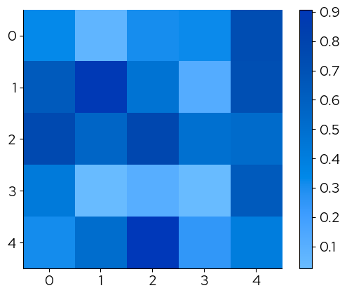
The continous palettes have been registered with matplotlotlib and their names can be passed to the cmap parameter to change the continuous scale:
plt.imshow(data, cmap="biolizard_sequential_pal")
plt.colorbar()
plt.show()
plt.imshow(data, cmap="biolizard_divergent_pal")
plt.colorbar()
plt.show()
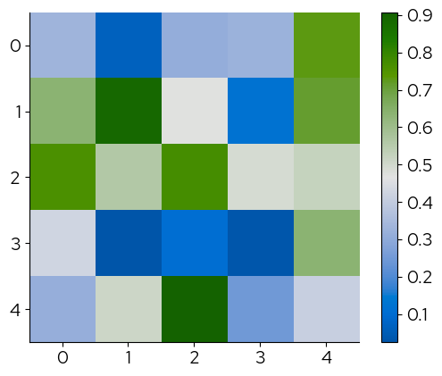
The corresponding palettes with suffix ‘_r’ reverse the colors:
plt.imshow(data, cmap="biolizard_divergent_pal_r")
plt.colorbar()
plt.show()
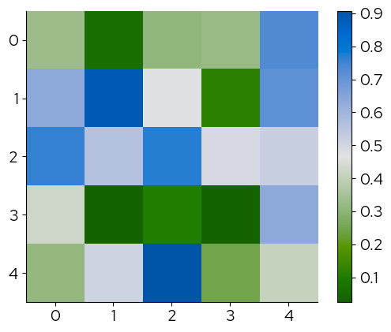
2.2.2 Seaborn
The names of the palettes can be passed to the palette parameter to change the continuous scale:
data = sns.load_dataset("iris")
sns.swarmplot(
x="species",
y="sepal_length",
hue="sepal_length",
data=data,
palette="biolizard_beige_gn_blue_pal",
)
plt.title("A Flower Plot")
plt.show()
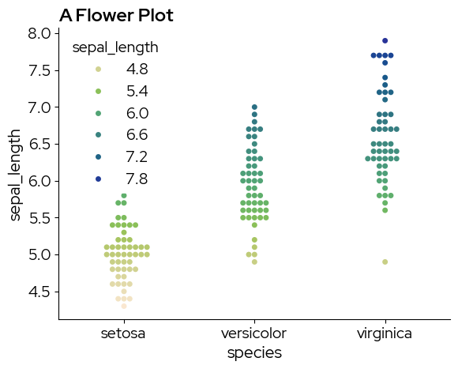
Examples
1. simple boxplot
sns.boxplot(x="species", y="sepal_length", data=data)
plt.title("A Flower Plot")
plt.show()
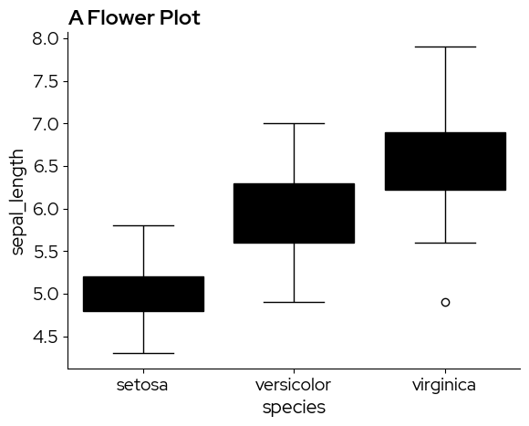
Unfortunately, matplotlib and seaborn do not make a distinction between fill colors and other elements in the default values, resulting in these black box plots. The solution is to manually adjust the facecolor property. Brand fill and element colors are available in the package (see 2. Using the color palettes). In this case we use blz_base_fill.
sns.boxplot(x="species", y="sepal_length", data=data, boxprops={"facecolor": blz_base_fill})
plt.title("A Flower Plot")
plt.show()
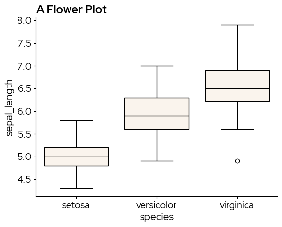
blz_highlight_fill can be used to highlight specific elements. For example if we are especially interested in the setosa species:
sns.boxplot(x="species", y="sepal_length", data=data,
hue = "species", # to enable passing a palette
palette=[blz_highlight_fill, blz_base_fill, blz_base_fill]) # manually defoining a discrete palette
plt.title("A Flower Plot")
plt.show()
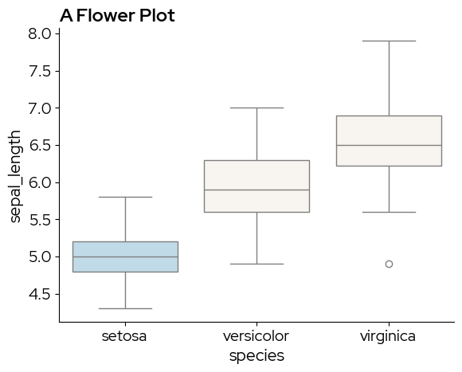
A violin plot is similar to a boxplot, but captures more information on the data distribution. sns.violinplot does not have the boxprop parameter, so we need to tweak the violin elements by cycling through ax.collections:
ax = sns.violinplot(x="species", y="sepal_length", data=data)
for violin in ax.collections:
violin.set_facecolor(blz_base_fill)
violin.set_edgecolor(blz_base_element)
violin.set_linewidth(1)
ax.set_title("A Flower Plot")
plt.show()
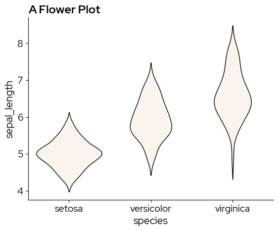
2. Simple density plot
sns.displot(data,
x="sepal_length",
hue="species",
kind="kde",
fill=True,
palette=biolizard_qualitative_pal.colors)
plt.title("A Flower Plot")
plt.show()
/var/folders/b1/zd673br14kd_wv9lkwv86y200000gn/T/ipykernel_13978/1132376799.py:1: UserWarning: The palette list has more values (8) than needed (3), which may not be intended.
sns.displot(data,
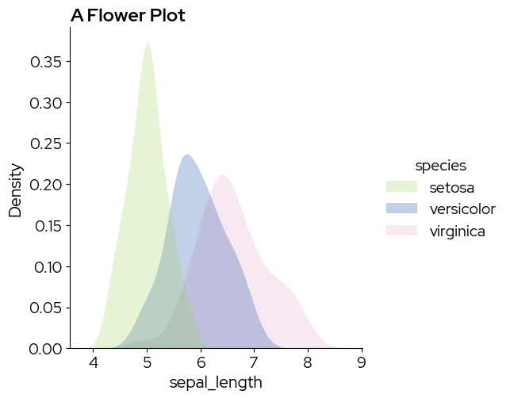
3. Simple scatterplot
sns.scatterplot(
data,
x="sepal_length",
y="petal_length",
hue="petal_length",
palette="biolizard_beige_blue_pal",
)
plt.title("A Flower Plot")
plt.show()
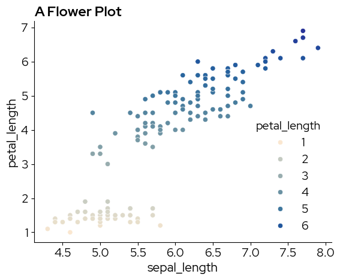
We can use lmplot or regplot to add a regression line:
import scipy as sp
g = sns.lmplot(data, x="sepal_length", y="petal_length", line_kws=dict(color=blz_highlight_element))
def annotate(data, **kws):
r, p = sp.stats.pearsonr(data["sepal_length"], data["petal_length"])
ax = plt.gca()
ax.text(0.05, 0.8, "$r^2$={:.2f}, p={:.2g}".format(r**2, p), transform=ax.transAxes)
g.map_dataframe(annotate)
plt.title("A Flower Plot")
plt.show()
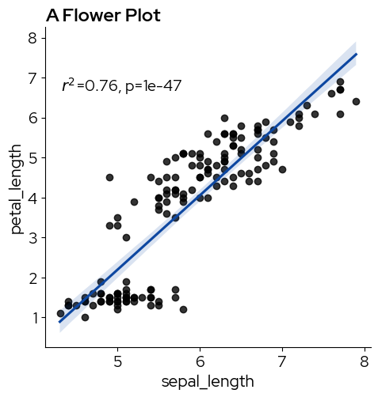
# specify hue to show the three species
sns.lmplot(data,
x="sepal_length",
y="petal_length",
hue="species",
palette=biolizard_qualitative_pal.colors)
<seaborn.axisgrid.FacetGrid at 0x15a288cd0>
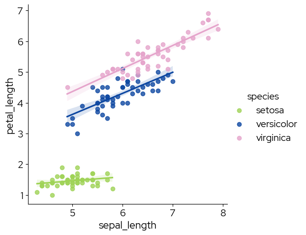
Note that using the reversed palette starts picking the colors from the end of the palette. If you want to pick the colors you need, and reverse them afterward (eg pink-blue-green instead of green-blue-pink), use the regular palette and reverse the colors after picking them:
my_colors = biolizard_qualitative_pal.colors[0:3]
fig, axes = plt.subplots(nrows=1, ncols=2, figsize=(10, 5))
# regular palette
sns.scatterplot(
data,
x="sepal_length",
y="petal_length",
hue="species",
palette=my_colors,
ax=axes[0],
)
axes[0].set_title("Regular palette")
# reversed
my_colors.reverse()
sns.scatterplot(
data,
x="sepal_length",
y="petal_length",
hue="species",
palette=my_colors,
ax=axes[1],
)
axes[1].set_title("Reversed palette")
fig.show()
/var/folders/b1/zd673br14kd_wv9lkwv86y200000gn/T/ipykernel_13978/3567715431.py:28: UserWarning: FigureCanvasAgg is non-interactive, and thus cannot be shown
fig.show()
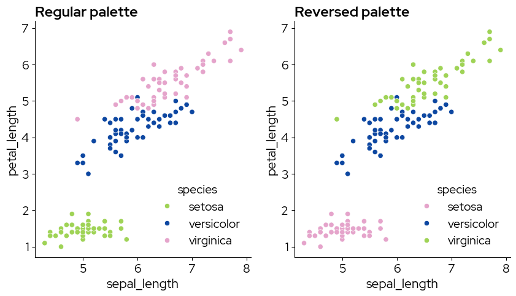
4. Facets
Facetting is a great way to lay out related plots side-by-side, with the axes either on the same scale or on different scales.
g = sns.FacetGrid(data, col="species")
g.map_dataframe(sns.scatterplot, x="sepal_length", y="petal_length")
<seaborn.axisgrid.FacetGrid at 0x15a40afd0>
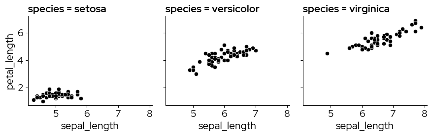
5. Treemap plots
Treemap plots can be used as an alternative for bar charts, for example when there are so many categories that a bar chart may not be clear anymore.
In this example, more colors are requested than are present in the qualitative color scales. The biolizard_hues_pal palette was developped for situations like this. It maps each level to an evenly spaced hue on the color wheel, starting with the dark green from the brand book, but it DOES NOT generate colorblind-safe palettes.
import squarify
# Sample data
values = [250, 120, 280, 320, 140, 95, 87, 270, 896, 25, 654, 78, 37]
labels = ["Group" + str(i) for i, _ in enumerate(values)]
# take colors at regular intervals across the colormap
colors = biolizard_hues_pal(np.linspace(0, 1, len(values)))
# Treemap
squarify.plot(
sizes=values,
label=labels,
color=colors,
text_kwargs={"color": blz_base_text},
edgecolor=blz_base_element,
linewidth=2,
)
# Remove the axis:
plt.axis("off")
plt.show()
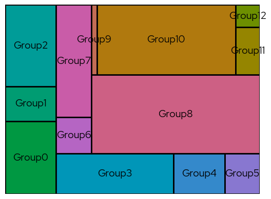